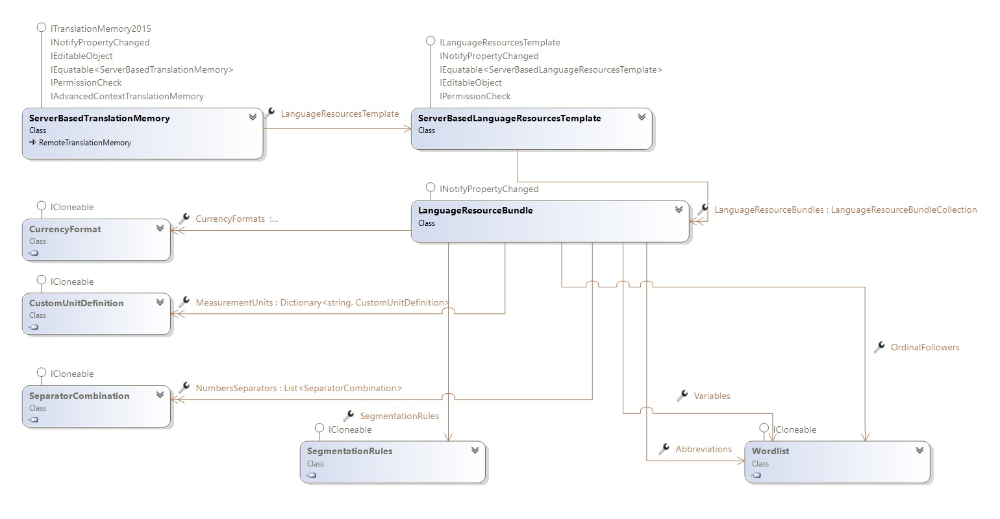

Working with Language Resource Templates
This topic explains how to use language resource templates to centralize server-based translation memory language resources.
Overview
Server-based translation memories support custom language resources. For more information, see Working with Language Resources.
Managing language resources across many translation memories can become tedious. Instead of defining language resources for each translation memory individually, use a language resource template. A language resource template is a named collection of language resources that server-based translation memories can inherit. When you update the template, the change propagates to every linked translation memory.
The ServerBasedLanguageResourcesTemplate class represents a language resource template. To create one, instantiate a new ServerBasedLanguageResourcesTemplate object, set its Name property, add language resource bundles to the LanguageResourceBundles collection, and then call Save.
To associate a server-based translation memory with a language resource template, set the LanguageResourcesTemplate property and then call Save to persist the change. You can set the language resource template on a new translation memory or on an existing one.
